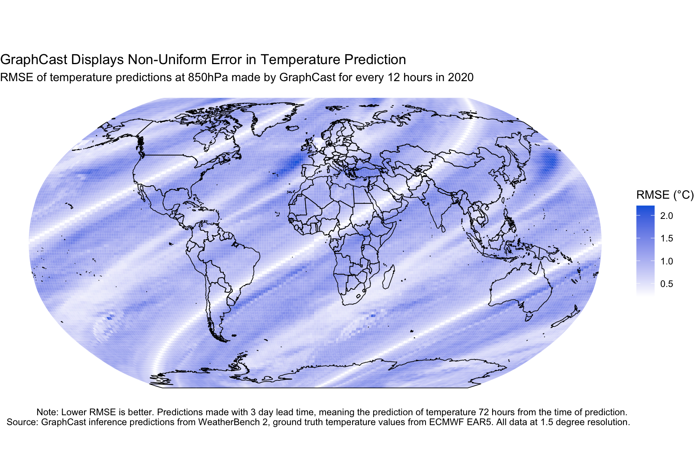

🌎🌍🌏🌎🌍🌏🌎🌍🌏🌎🌍🌏🌎🌍🌏🌎🌍🌏🌎🌍🌏🌎🌍🌏🌎🌍🌏🌎🌍🌏🌎🌍🌏🌎🌍🌏🌎🌍🌏🌎🌍🌏🌎🌍🌏🌎🌍🌏🌎🌍🌏🌎🌍🌏🌎🌍🌏🌎🌍🌏🌎🌍🌏🌎🌍🌏🌎🌍🌏🌎🌍🌏🌎🌍🌏🌎🌍🌏🌎🌍🌏
Artificial intelligence (AI) is revolutionizing weather forecasts, improving both their accuracy and computational efficiency. However, these models have a fatal flaw. The measure of an AI forecasting models quality is its average accuracy across all gridpoints over the globe. This approach is in line with the mathematical roots of the AI field, but fails to capture the real world impacts that drive our desires for accurate weather forecasting. To understand why, lets take a look at where on Earth model performance is worst. We will stick with GraphCast, Google's state of the art deterministic weather forecasting model, and consider its ability to predict atmospheric temperature 3 days in advance—a common benchmark for models.
🌎🌍🌏🌎🌍🌏🌎🌍🌏🌎🌍🌏🌎🌍🌏🌎🌍🌏🌎🌍🌏🌎🌍🌏🌎🌍🌏🌎🌍🌏🌎🌍🌏🌎🌍🌏🌎🌍🌏🌎🌍🌏🌎🌍🌏🌎🌍🌏🌎🌍🌏🌎🌍🌏🌎🌍🌏🌎🌍🌏🌎🌍🌏🌎🌍🌏🌎🌍🌏🌎🌍🌏🌎🌍🌏🌎🌍🌏🌎🌍🌏
🌎🌍🌏🌎🌍🌏🌎🌍🌏🌎🌍🌏🌎🌍🌏🌎🌍🌏🌎🌍🌏🌎🌍🌏🌎🌍🌏🌎🌍🌏🌎🌍🌏🌎🌍🌏🌎🌍🌏🌎🌍🌏🌎🌍🌏🌎🌍🌏🌎🌍🌏🌎🌍🌏🌎🌍🌏🌎🌍🌏🌎🌍🌏🌎🌍🌏🌎🌍🌏🌎🌍🌏🌎🌍🌏🌎🌍🌏🌎🌍🌏
This graph shows the root mean squared error (RMSE), the standard error metric in weather forecasting,
of each 1.5° by 1.5° cell across Earth. RMSE in this instance is calculated as the temporally averaged
error of the model across predictions made every 12 hours throughout 2020; this data was not part of
the model's training set. The greater the RMSE, the greater the absolute difference between the model's
prediction of the temperature at that gridpoint and the actual value.
It is apparent that the model does not perform uniformly well across the globe. This is
the pernicious result of using geospatially averaged accuracy as the one and only metric:
unfair performance disparaties get masked. Given that the accuracy of extreme heat forecasts has a
direct effect on mortality, it is a matter of
life and death to be aware of the relative strengths of different models at every
individual location.
🌎🌍🌏🌎🌍🌏🌎🌍🌏🌎🌍🌏🌎🌍🌏🌎🌍🌏🌎🌍🌏🌎🌍🌏🌎🌍🌏🌎🌍🌏🌎🌍🌏🌎🌍🌏🌎🌍🌏🌎🌍🌏🌎🌍🌏🌎🌍🌏🌎🌍🌏🌎🌍🌏🌎🌍🌏🌎🌍🌏🌎🌍🌏🌎🌍🌏🌎🌍🌏🌎🌍🌏🌎🌍🌏🌎🌍🌏🌎🌍🌏
🌎🌍🌏🌎🌍🌏🌎🌍🌏🌎🌍🌏🌎🌍🌏🌎🌍🌏🌎🌍🌏🌎🌍🌏🌎🌍🌏🌎🌍🌏🌎🌍🌏🌎🌍🌏🌎🌍🌏🌎🌍🌏🌎🌍🌏🌎🌍🌏🌎🌍🌏🌎🌍🌏🌎🌍🌏🌎🌍🌏🌎🌍🌏🌎🌍🌏🌎🌍🌏🌎🌍🌏🌎🌍🌏🌎🌍🌏🌎🌍🌏
While GraphCast has a better globally averaged performance, it performs worse at predicting the temperature in Providence, RI compared to models X, Y, Z.
🌎🌍🌏🌎🌍🌏🌎🌍🌏🌎🌍🌏🌎🌍🌏🌎🌍🌏🌎🌍🌏🌎🌍🌏🌎🌍🌏🌎🌍🌏🌎🌍🌏🌎🌍🌏🌎🌍🌏🌎🌍🌏🌎🌍🌏🌎🌍🌏🌎🌍🌏🌎🌍🌏🌎🌍🌏🌎🌍🌏🌎🌍🌏🌎🌍🌏🌎🌍🌏🌎🌍🌏🌎🌍🌏🌎🌍🌏🌎🌍🌏
This is just one example. When we dig deeper, we see that we can find general trends... In general, we see that there are significant disparities in model performance based on the strata of ...
🌎🌍🌏🌎🌍🌏🌎🌍🌏🌎🌍🌏🌎🌍🌏🌎🌍🌏🌎🌍🌏🌎🌍🌏🌎🌍🌏🌎🌍🌏🌎🌍🌏🌎🌍🌏🌎🌍🌏🌎🌍🌏🌎🌍🌏🌎🌍🌏🌎🌍🌏🌎🌍🌏🌎🌍🌏🌎🌍🌏🌎🌍🌏🌎🌍🌏🌎🌍🌏🌎🌍🌏🌎🌍🌏🌎🌍🌏🌎🌍🌏
🌎🌍🌏🌎🌍🌏🌎🌍🌏🌎🌍🌏🌎🌍🌏🌎🌍🌏🌎🌍🌏🌎🌍🌏🌎🌍🌏🌎🌍🌏🌎🌍🌏🌎🌍🌏🌎🌍🌏🌎🌍🌏🌎🌍🌏🌎🌍🌏🌎🌍🌏🌎🌍🌏🌎🌍🌏🌎🌍🌏🌎🌍🌏🌎🌍🌏🌎🌍🌏🌎🌍🌏🌎🌍🌏🌎🌍🌏🌎🌍🌏
SAFE is a new open-source package I have developed to facilitate all of the data exploration and fairness assessments I have conducted. The hope with this tool is that it will empower decision-makers with the insight to use the most locally-accurate model for them, and encourage AI developers to prioritze fairness in their model performance by providing a convenient way to perform stratified assessments—breaking free of the single-metric paradigm.